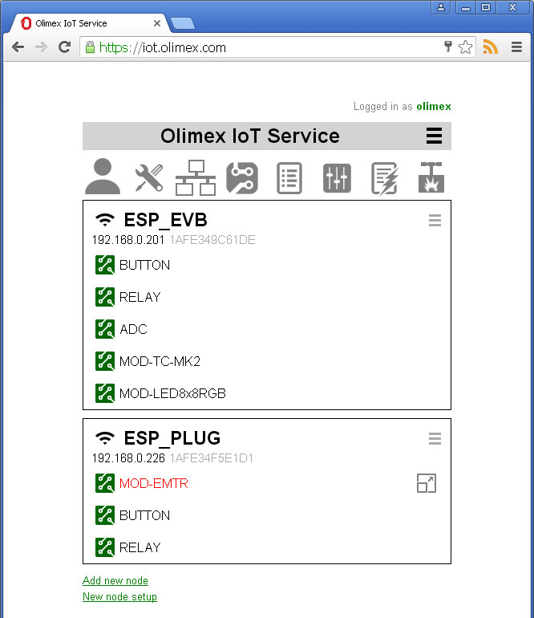
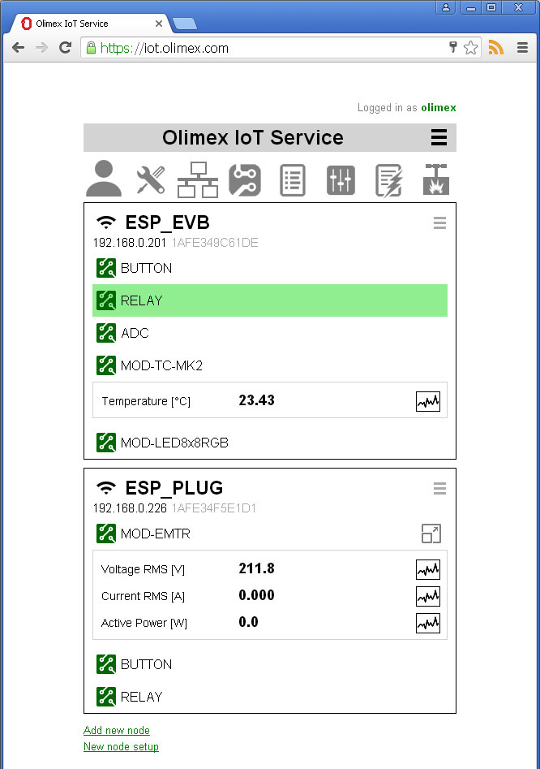
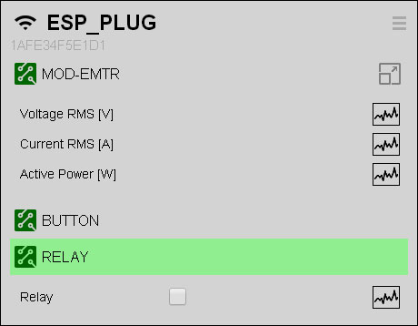
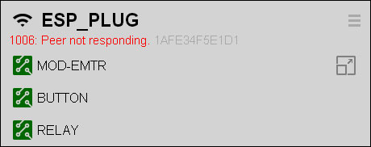
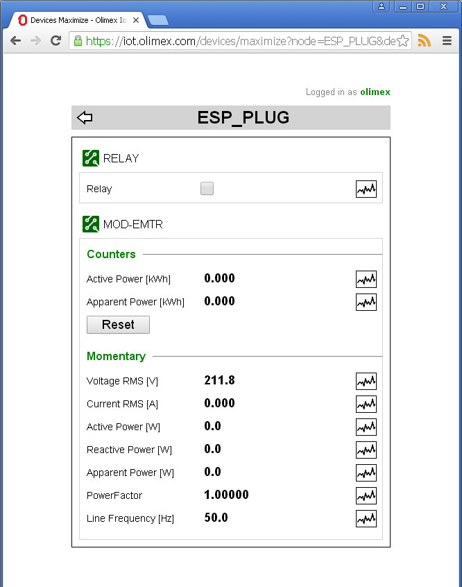

Back to OlimexIoT Help
Log in into OlimexIoT Server. If you have alredy configured some nodes you should see something like this:
Before moving forward you may want to read about Node management.
In the screenshot above we have two nodes ESP_EVB and ESP_PLUG and each node has several devices. MOD-EMTR device is highlighted in red because at this moment an event occurs.
You can see each node's Name, IP Address and Token.
If the node is behind NAT or proxy you will see its IP address.
More information for node's IP address is available at its menu Station info
By clicking on device name we can expand the device's additional information.
If the node is not connected it will be grayed. Note that we can still expand devices.
If the connection with the node is lost you may see error code and message.
If there is too much information to be shown on main screen the maximize icon will be displayed. By clicking on the icon you will see all information available for this device. Some additional devices can be shown if they are related to maximized device.
For example, if you maximize ESP_PLUG's MOD-EMTR device RELAY device will be shown as well so you can easily switch it on and off and see how power consumption is changed.
Continue with Automation
Back to OlimexIoT Help